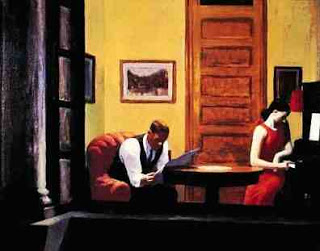

Bava Batra 59 - Privacy Rights Limit Renovations

One may not open his windows into a jointly owned courtyard, since he will be able to observe the activities of his partners in the courtyard below without their knowledge, thereby committing visual trespass.
The person opening the window could argue to his partner: "In any event you need to conceal your actions in the courtyard from me, and windows will not result in any additional visual trespass."
However, his partner can reply, "When you were in your house and your door was closed, I was able to use the courtyard for private activities. But now, if you open a window to the courtyard, even when you are in your home, I need to conceal myself from you."